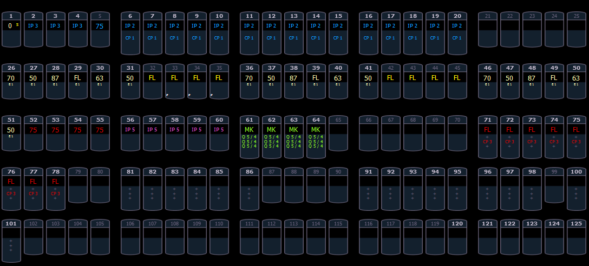
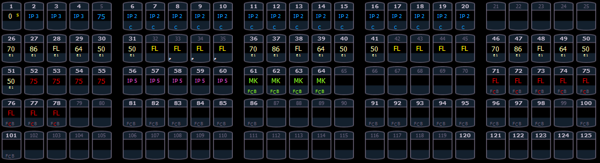

The summary view displays the largest number of channels of any of the formats. This format is best used to see large numbers of channels’ intensity data and/or parameter category data. Individual parameters are not visible in this view.
FCB icons will appear at the bottom of the channel area for channels that have those parameters patched to them. See Indicators in the Live/ Blind Display for more information.

To collapse the summary view, hold down [Data] and any of the encoder paging keys (Focus, Color, Image, Shutter, or Form).

When the summary view has been collapsed to show only intensity data, you may include focus, color, or beam data in the summary view by holding down [Data] and any of the encoder paging keys (Focus, Color, Image, Shutter, or Form) This displays all categories again.